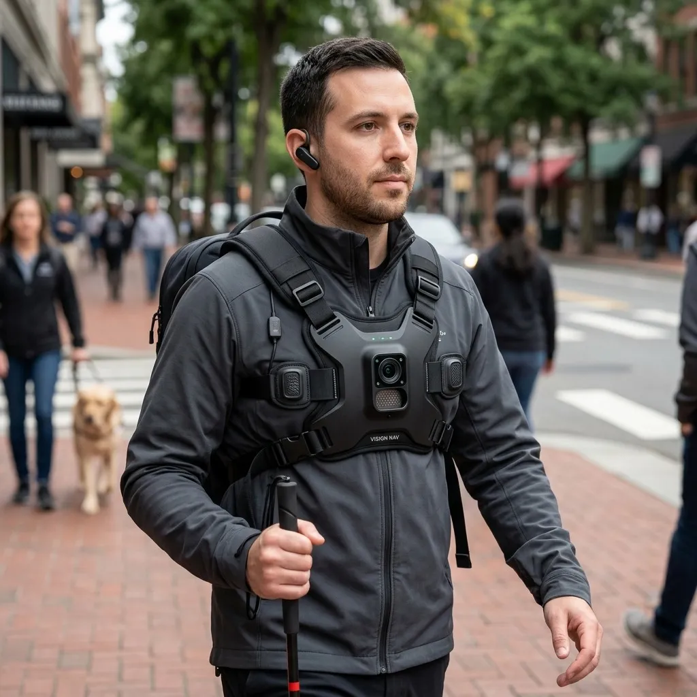
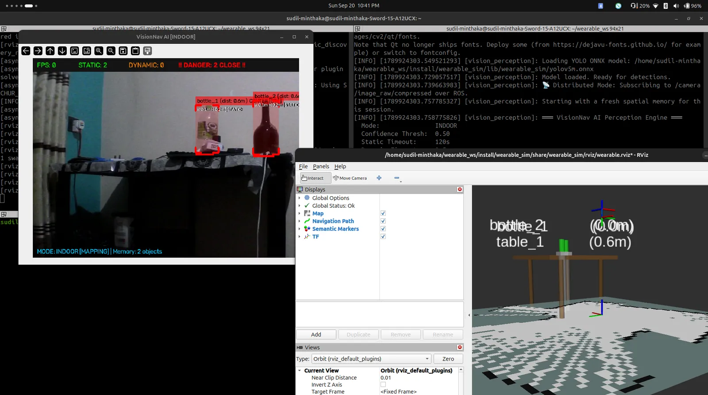
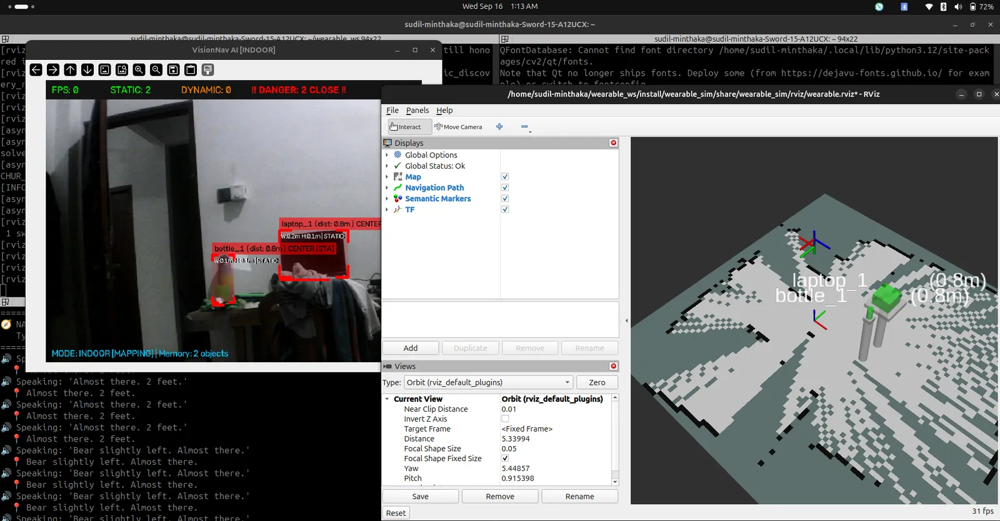

01
Find anything
Open-vocabulary detection: ask for “the red bottle” or “a screwdriver”, not just a fixed list of classes.
Working prototype · tested on the real rig
A wearable guide that finds things, plans the way, and tells you where to walk.
LiDAR SLAM · Open-vocabulary AI · Clock-direction voice · Fully offline

01 · Why it matters
VisionNav is a chest rig with a camera, a LiDAR and five buttons, plus a laptop in a backpack. It builds a map of the room, remembers where things are, and talks you to them, one short sentence at a time.
ProblemMost wearables forget the chair the moment you turn away
VisionNavObjects are pinned to a LiDAR SLAM map and kept for the whole session
ProblemConstant beeps and vibration codes wear you out
VisionNavOne sentence about the most urgent thing. Silence otherwise.
Problem“Go straight” walks you into the table
VisionNavA planned route around obstacles, spoken in feet and clock positions
ProblemThe last few inches: finding the cup on the table
VisionNavHand mode guides your hand: “Left 2 inches… Stop.”
ProblemCloud AI is slow, costs money and needs a signal
VisionNavEverything runs offline, on the rig and the laptop
02 · How it works
03 · What it can do
01
Open-vocabulary detection: ask for “the red bottle” or “a screwdriver”, not just a fixed list of classes.
02
“Go to the chair next to the door.” A route around the furniture, spoken turn by turn until you arrive.
03
Objects stay on the map after you turn away. Move one and it's updated the next time the camera looks.
04
Hand mode watches your hand and the cup together: “Left 2 inches… Forward 4 inches… Stop.”
05
Kerbs, holes, head-height branches, zebra crossings and approaching vehicles, with time to collision. Only what's ahead.
06
A local vision model describes the scene, or answers one question: “What colour is this shirt?”
07
Face mode recognises people you've introduced and tells you who's there and where.
08
Hold a button and speak. Whisper runs on the laptop. No wake word and no microphone always listening.
04 · See it in action


05 · Try it
These are the rig's five buttons. Tap, hold (press for about a second) or double tap them and read what VisionNav would say. You can also use keys 1–5. Start with SENSORS.
Turn on JavaScript to try the buttons.
06 · How to use
| Button | Tap | Hold | Double tap |
|---|---|---|---|
| SENSORS | Camera, LiDAR and IMU on | Sensors off | — |
| LOOK | Describe the scene | Ask a question | Vision AI off |
| MODE | Indoor ↔ outdoor | Close map and camera, forget the session | — |
| HAND | Hand mode on / off | Say an object, your hand is guided to it | Face mode on (again: face and hand off) |
| TALK | What is around me | Say where to go (indoor) | Stop navigation |
Put on the rig and the earpiece. Tap SENSORS. Walk around the room for a moment; the map and the objects fill in as you go.
Hold TALK and say where: “the chair”, “the chair next to the door”, “the kitchen”. Follow the voice until it says you've arrived. Double tap TALK to stop at any time.
Tap HAND, then hold HAND and say the object. Move your hand slowly; it says left, right, forward, and “Stop” when the object is at your hand.
Tap MODE. Nothing is mapped outdoors. It only warns you about what is ahead: the most urgent thing, with its distance and which way to step.
Hold MODE. The map, the objects and named places are forgotten. Each indoor session starts with a fresh map.
07 · Under the hood
Two computers, one ROS 2 graph. The Pi on the chest only reads buttons and streams sensors; the laptop does all the AI, mapping, planning and speech. Nothing leaves the rig.
$ visionnav --spec
Chest Raspberry Pi 5, 5 tactile GPIO buttons
LiDAR RPLiDAR C1, 10 Hz, chest height, body filtered out
Camera USB camera → compressed JPEG over ROS 2
IMU MPU-6050, 100 Hz (turn rate + gravity)
Compute Laptop, RTX 2050 4 GB, in a backpack
Link Wi-Fi, ROS 2 Jazzy DDS (ROS_DOMAIN_ID=42)
Detection YOLOE open-vocabulary, TensorRT
Depth Depth Anything V2 metric, calibrated by the LiDAR
Tracking Kalman-filtered object tracks
Mapping Cartographer SLAM (+ IMU)
Planning Nav2 Theta* planner + smoother, semantic costmap
Speech in Whisper push-to-talk
Speech out Piper TTS, feet + clock directions
Vision AI Qwen3-VL 2B via Ollama, local
Internet not needed
pi_button_panel reads the buttons, starts and stops the sensorssllidar_node LiDAR → /scanphone_camera_publisher camera → JPEGmpu6050_imu IMU → /imu/datavoice_navigation_assistant buttons, speech, guidanceobject_perception detection, depth, tracking, object mapsemantic_navigator “chair” → approach point → pathsemantic_costmap map + objects + people → costmapscene_describer local vision-language modelweb_dashboard live 3D view of everything above08 · Where it helps
See less. Know more. Walk on your own.